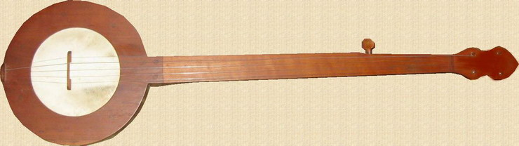
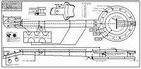

Select your area of interest:
Home* Lap Steel* 3 String Guitar* "Regular" Guitar* Violin* Bass*Banjo* Mandolin* Ukulele* Home Recording* Links
Open Back Banjo:
Traditional & progressive design & construction information
Boucher Early Minstrel Banjo (construction guide on CD & full size plan available)Frank Profitt Mountain Banjo
Bluestem Mountain Banjo Nouveau
Bluestem Artisan Mountain Banjo
Bluestem Open Back Banjo Nouveau
Bluestem Wine Box / Hand Drum Banjo
Open Back Banjo Design Primer
General Banjo Construction Information
Open Back Banjo Setup Guide
“Why can’t I get this thing to play in tune?” (more than you wanted to know about equal temperament)
Bluestem Open Back Banjo (construction guide on CD & full size plan available)
Bluestem Workingpersons 11 Slot Head Open Back Banjo (construction guide on CD & full size plan available)
Bluestem Wood Top Banjo Information (full size plan available)
*****************************************
Frank Proffitt Mountain Banjo
*****************************************

Click HERE for "traditional" Frank Proffitt-style mountain banjo plan in PDF format.

*****************************************
Frank Proffitt of Reese, North Carolina is the man whose name is most synonymous with traditional mountain banjo design. Although Frank was not the first to build mountain-style banjos, (himself learning from his father), he was most likely the single most important person where the popularization of the instrument is concerned. Although the basic instrument has short-comings where comfort and playability is concerned, it is still considered to be the standard against what all other designs are measured.It also has many factors that make it attractive for a first fretless, such as authenticity and ease of construction. Indeed, this style of banjo was most likely conceived as a purely utilitarian method of constructing a musical instrument with the simple tools and resources that were on hand. The plan presented here is based on a visual examination of several Proffitt banjos and is a fair representation of his work. Although I do not build this style of instrument I wanted to be able to promote its construction, so I’m making this plan available to anyone who desires to make one. The plan has all of the details to build a banjo representative of the Proffitt style. The plan is also annotated for a few possible “upgrades” while keeping the original design intact.
The plan is presented as a PDF file and has been drawn as a full size print. You may use the PDF directly, (all critical dimensions are noted on the plan and PDFs can be zoomed with little loss of detail) or save the file to CDR or flash drive and take it to your local full service print shop to have a FULL SIZE 36" BY 18" plan printed for a few bucks. Make sure that the ACTUAL SIZE of the drawing outer borders printed measure 36” by 18” to ensure they have printed it out correctly for you. The PDF has been formatted to print on 24" by 48" paper, but it can be printed to correct size on any paper 20" by 38" or larger. Your biggest obstacle in this process will be finding someone at the print shop that is familiar enough with their software to get the PDF to print out at the correct size. This will occasionally be a bit of a challenge for them, but that's their job. Make them keep trying until they get it right! They should be able to use their “print preview” window in their printing software to save themselves a little trouble.
A full size drawing is nice to have, and eliminates the many steps involved in scaling up a drawing to actual size. A full size print also permits you to place semi-rigid plastic over specific areas and trace over it with a fine point permanent marker to create templates to transfer directly to your work. If you opt to work from the PDF, all of the critical dimensions are noted on the print.
*****************************************
Please visit my other website designed to provide information on musical instrument construction. There are free plans as well as construction tips and techniques available at the present time.
Rudy's Sketchbook of Musical Instrument Plans, Ideas, and Inspiration
*****************************************

If you desire to contact me about Bluestem Strings products:
Due to scoundrelous spammers actively mining sites for e-mail addresses, I'm forced to include the following text version of my e-mail address meant to confuse the automated robo-search of websites for e-mail addresses. Please e-mail me at:rcordle (substitute the at symbol here) fastmail (substitute the dot here) fm
Please include "Bluestem Info Request" in the subject line, Thanks!